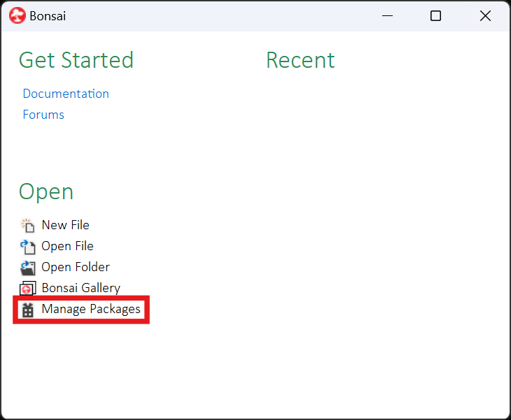
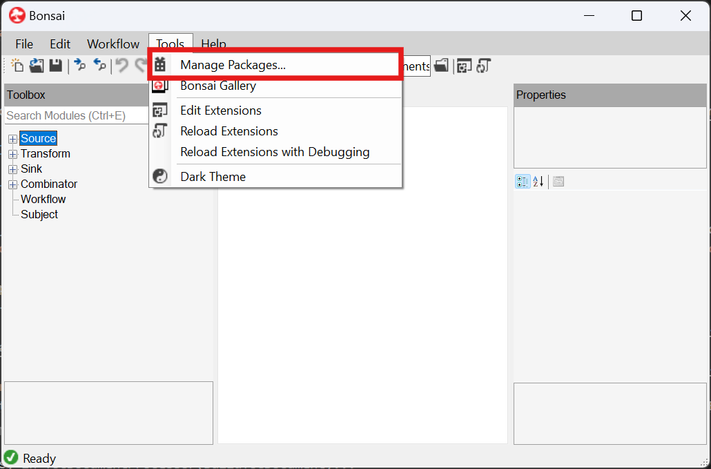
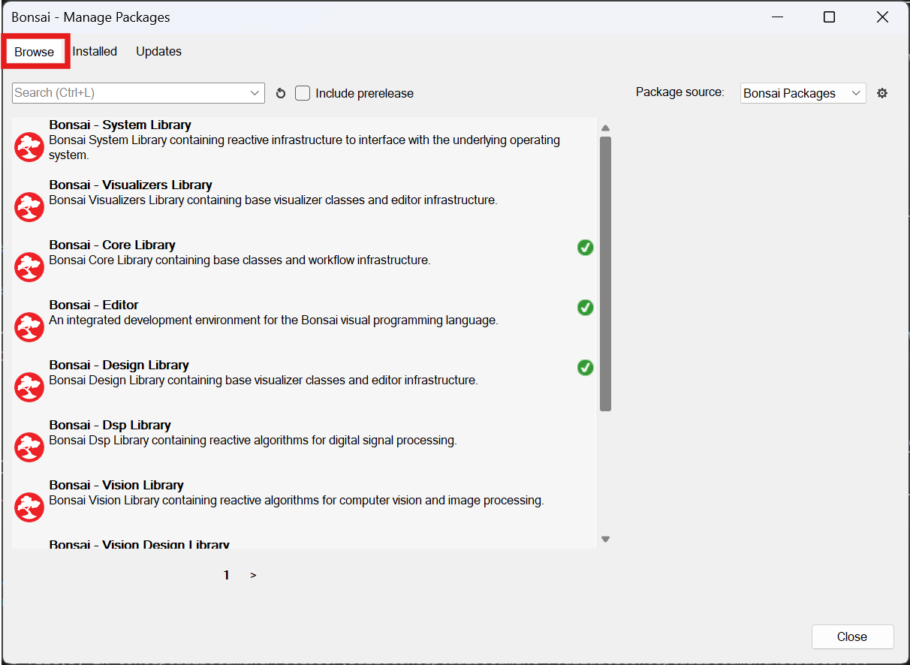
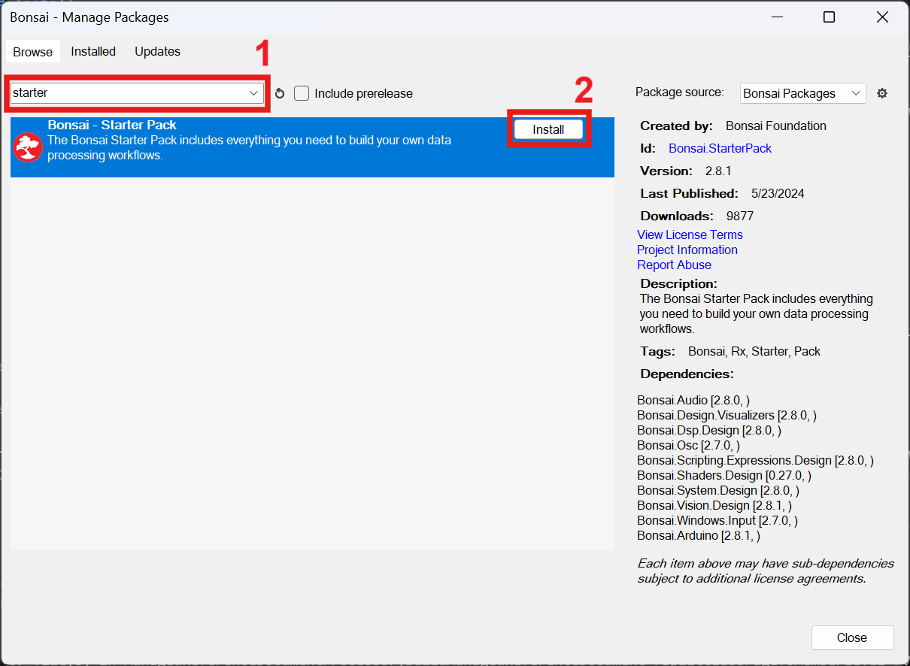
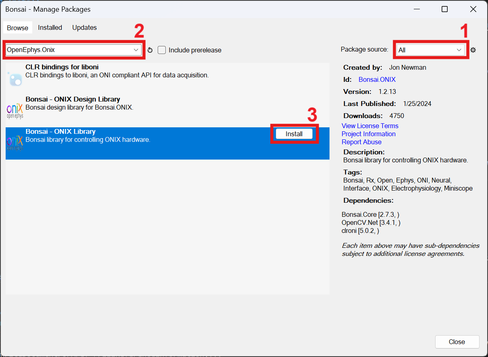

Installation and Download
- To install
OpenEphys.Onix, first install Bonsai here - Once Bonsai is installed, open Bonsai and download the necessary packages
Open the Bonsai package manager
 or 
Go to Browse

Download the
Bonsai.StarterPack, which contains several commonly used packages that will be useful for creating workflows and visualizing data. Search forBonsai.StarterPack(1), select the package and click Install (2). ClickI Acceptto accept the licenses.
Change the package source to All (1), then follow the same steps (2,3) to search for and install
OpenEphys.Onix
Warning
Update this once the package has been published to NuGet
Note
Alternatively, to take advantage of the graphical user interface built on top of Bonsai, search for the
OpenEphys.Onix.Designpackage, which provides GUI's for many of the configurable nodes, making it easier to configure settings and visualize changes prior to committing them to the hardware
Now that Bonsai has been installed, and the appropriate packages downloaded, it is time to start placing nodes and configuring them. If you are new to Bonsai, the following sections give a high-level understanding of how Bonsai is organized, and some of the ONIX-specific concepts that will be useful for learning how to work with the nodes.